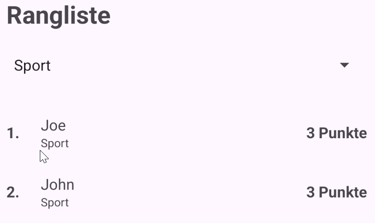

Modul 335 Mobile Applikationen, Tag 4 Vormittag. Lösungsmaterial zum Auftrag 07B. Version 5 vom 06.09.2026.
Unten stehen die vier Dateien vollständig, so wie sie nach 07B aussehen. Die Änderungen dieses Auftrags sind im Code kommentiert.
| Nr | Das prüfst du | Warum es zählt |
|---|---|---|
| 1 | Hat der mittlere Block layout_width="0dp" und layout_weight="1"? | Nur beide zusammen wirken. Mit wrap_content rechnet Android zuerst den Inhalt |
| 2 | Hat tvEntryName maxLines="1" und ellipsize="end"? | Ohne maxLines tut ellipsize nichts, und die Zeile wird höher als die anderen |
| 3 | Kommt tvEntryName im Layout genau einmal vor? | Sie zieht in den mittleren Block um, sie kommt nicht dazu |
| 4 | Hat tvEntryScore ein layout_marginStart="12dp"? | Sonst klebt die Punktzahl am Namen. Die Änderung geht am leichtesten unter |
| 5 | Zeigt der Anker oben am rvHighscore auf @id/spnFilter? | Sonst liegen Filter und erste Zeile übereinander |
| 6 | Ist allEntries ein Feld und gleich mit new ArrayList<>() belegt? | Der Filter meldet sich, bevor onResume zum ersten Mal geladen hat |
| 7 | Steht in onResume vor allEntries kein Typ mehr? | Sonst füllst du eine lokale Variable, und das Feld bleibt leer. Der Compiler sagt nichts |
| 8 | Baut applyFilter eine zweite Liste, statt allEntries selbst zu filtern? | Sonst ist dein Bestand nach dem ersten Filtern kaputt. Beim Zurückkommen sieht es trotzdem gut aus, weil onResume neu lädt |
| 9 | Steht bei categories().get(position - 1) das - 1? | Position 0 ist "Alle Kategorien" und steht nicht im Bestand |
| 10 | Haben applyFilter, buildFilterLabels, spnFilter und allEntries ihr Javadoc? | Wird in der Leistungsbeurteilung bewertet |
| 11 | Steht im HighscoreAdapter nirgends mehr drei TextViews? | Es sind vier. Ein falscher Kommentar ist schlimmer als gar keiner |

Sport. Joe stand vorher auf Rang 2, jetzt steht er auf Rang 1.Das ist kein Fehler, und du hast es in 06C selbst so gebaut. In onBindViewHolder steht position + 1, und die Position ist die Stelle in der Liste, die der Adapter gerade hat. Filterst du, ist es eine andere Liste.
Der Rang gehört nicht zum Eintrag, er gehört zu der Liste, in der er steht. Dieselbe Entscheidung wie in 06A, wo der Rang bewusst nicht ins Datenmodell kam.
res/layout/item_highscore.xml<?xml version="1.0" encoding="utf-8"?> <LinearLayout xmlns:android="http://schemas.android.com/apk/res/android" xmlns:tools="http://schemas.android.com/tools" android:layout_width="match_parent" android:layout_height="wrap_content" android:gravity="center_vertical" android:orientation="horizontal" android:paddingTop="12dp" android:paddingBottom="12dp"> <TextView android:id="@+id/tvRank" android:layout_width="36dp" android:layout_height="wrap_content" android:textSize="16sp" android:textStyle="bold" tools:text="1." /> <LinearLayout android:layout_width="0dp" android:layout_height="wrap_content" android:orientation="vertical" android:layout_weight="1"> <TextView android:id="@+id/tvEntryName" android:layout_width="match_parent" android:layout_height="wrap_content" android:ellipsize="end" android:maxLines="1" android:textSize="16sp" tools:text="Sara" /> <TextView android:id="@+id/tvEntryCategory" android:layout_width="match_parent" android:layout_height="wrap_content" android:textSize="12sp" tools:text="Geographie" /> </LinearLayout> <TextView android:id="@+id/tvEntryScore" android:layout_width="wrap_content" android:layout_height="wrap_content" android:layout_marginStart="12dp" android:textSize="16sp" android:textStyle="bold" tools:text="4 Punkte" /> </LinearLayout>
res/layout/activity_highscore.xml<?xml version="1.0" encoding="utf-8"?> <androidx.constraintlayout.widget.ConstraintLayout xmlns:android="http://schemas.android.com/apk/res/android" xmlns:app="http://schemas.android.com/apk/res-auto" xmlns:tools="http://schemas.android.com/tools" android:id="@+id/clHighscore" android:layout_width="match_parent" android:layout_height="match_parent" tools:context=".HighscoreActivity"> <TextView android:id="@+id/tvHighscoreTitle" android:layout_width="0dp" android:layout_height="wrap_content" android:text="@string/title_highscore" android:textSize="26sp" android:textStyle="bold" app:layout_constraintEnd_toEndOf="parent" app:layout_constraintStart_toStartOf="parent" app:layout_constraintTop_toTopOf="parent" /> <Spinner android:id="@+id/spnFilter" android:layout_width="0dp" android:layout_height="wrap_content" android:layout_marginTop="12dp" app:layout_constraintEnd_toEndOf="parent" app:layout_constraintStart_toStartOf="parent" app:layout_constraintTop_toBottomOf="@id/tvHighscoreTitle" /> <androidx.recyclerview.widget.RecyclerView android:id="@+id/rvHighscore" android:layout_width="0dp" android:layout_height="0dp" android:layout_marginTop="16dp" app:layout_constraintBottom_toBottomOf="parent" app:layout_constraintEnd_toEndOf="parent" app:layout_constraintStart_toStartOf="parent" app:layout_constraintTop_toBottomOf="@id/spnFilter" tools:itemCount="4" tools:listitem="@layout/item_highscore" /> </androidx.constraintlayout.widget.ConstraintLayout>
res/values/strings.xml, die zwei neuen Zeilen<!-- Filter in der Rangliste, ab 07B --> <string name="filter_all">Alle Kategorien</string> <string name="category_mixed">Gemischt</string>
package ch.wiss.m335.quiz; import android.content.Context; import android.view.LayoutInflater; import android.view.View; import android.view.ViewGroup; import android.widget.TextView; import androidx.annotation.NonNull; import androidx.recyclerview.widget.RecyclerView; import ch.wiss.m335.quiz.model.HighscoreEntry; import ch.wiss.m335.quiz.model.QuestionBank; import java.util.ArrayList; import java.util.List; /** * Füllt die Zeilen der Rangliste. * <p> * Der Adapter kennt nur die Einträge, die gerade zu sehen sind. Welche * das sind, entscheidet die HighscoreActivity mit setEntries. */ public class HighscoreAdapter extends RecyclerView.Adapter<HighscoreAdapter.HighscoreViewHolder> { /** * Die Einträge, die gerade angezeigt werden. * <p> * Die Liste gehört dem Adapter. Ausgetauscht wird ihr Inhalt nur über * setEntries, damit das notifyDataSetChanged nie vergessen geht. */ private final List<HighscoreEntry> entries = new ArrayList<>(); /** * Hält die Views einer Zeile fest. * <p> * Das ist der Sinn des ViewHolder: findViewById läuft einmal pro * Zeile und nicht bei jedem Scrollen. In 04B gab es das nicht, dort * wurde jede TextView neu erzeugt. */ static class HighscoreViewHolder extends RecyclerView.ViewHolder { /** Die Rangnummer links. */ final TextView tvRank; /** Der Name des Spielers. */ final TextView tvEntryName; /** Die Kategorie, klein unter dem Namen. Seit 07B. */ final TextView tvEntryCategory; /** Die erreichten Punkte, am rechten Rand. */ final TextView tvEntryScore; /** * Sucht die vier TextViews einmal und merkt sie sich. * * @param itemView die frisch gebaute Zeile */ HighscoreViewHolder(@NonNull View itemView) { super(itemView); tvRank = itemView.findViewById(R.id.tvRank); tvEntryName = itemView.findViewById(R.id.tvEntryName); tvEntryCategory = itemView.findViewById(R.id.tvEntryCategory); tvEntryScore = itemView.findViewById(R.id.tvEntryScore); } } /** * Baut eine neue, leere Zeile aus item_highscore.xml. * <p> * Das dritte Argument von inflate ist false. Mit true würde die Zeile * sofort an den Parent gehängt, und der RecyclerView bekäme eine * IllegalStateException mit dem Text "The specified child already has * a parent". Das ist der häufigste Absturz dieser Stufe. * * @param parent der RecyclerView, der die Zeile später einhängt * @param viewType wird hier nicht gebraucht, es gibt nur eine Zeilenart * @return ein ViewHolder mit den vier TextViews darin */ @NonNull @Override public HighscoreViewHolder onCreateViewHolder(@NonNull ViewGroup parent, int viewType) { View row = LayoutInflater.from(parent.getContext()) .inflate(R.layout.item_highscore, parent, false); return new HighscoreViewHolder(row); } /** * Füllt eine vorhandene Zeile mit den Daten eines Eintrags. * <p> * Die Rangnummer kommt aus der Position und nicht aus den Daten. Ein * Rang ist nichts, was man speichert, sondern etwas, was sich aus der * Reihenfolge ergibt. Sortiert oder filtert man anders, sind es andere Ränge. * * @param holder die Zeile, die gefüllt wird * @param position der Platz in der Liste, beginnend bei 0 */ @Override public void onBindViewHolder(@NonNull HighscoreViewHolder holder, int position) { HighscoreEntry entry = entries.get(position); Context context = holder.itemView.getContext(); holder.tvRank.setText(context.getString(R.string.rank_format, position + 1)); holder.tvEntryName.setText(entry.getName()); holder.tvEntryScore.setText(context.getString(R.string.entry_score_format, entry.getScore())); // Eine Runde über alle Kategorien ist gespeichert als "Alle". In der // Rangliste heisst sie "Gemischt". if (QuestionBank.CATEGORY_ALL.equals(entry.getCategory())) { holder.tvEntryCategory.setText(R.string.category_mixed); } else { holder.tvEntryCategory.setText(entry.getCategory()); } } /** @return wie viele Zeilen die Liste hat */ @Override public int getItemCount() { return entries.size(); } /** * Tauscht die angezeigten Zeilen aus. * * @param newEntries der Ausschnitt, der ab jetzt zu sehen ist */ @SuppressWarnings("NotifyDataSetChanged") public void setEntries(List<HighscoreEntry> newEntries) { entries.clear(); entries.addAll(newEntries); notifyDataSetChanged(); } }
package ch.wiss.m335.quiz; import android.os.Bundle; import android.util.Log; import android.view.View; import android.widget.AdapterView; import android.widget.ArrayAdapter; import android.widget.Spinner; import androidx.activity.EdgeToEdge; import androidx.appcompat.app.AppCompatActivity; import androidx.core.graphics.Insets; import androidx.core.view.ViewCompat; import androidx.core.view.WindowInsetsCompat; import androidx.recyclerview.widget.LinearLayoutManager; import androidx.recyclerview.widget.RecyclerView; import ch.wiss.m335.quiz.data.HighscoreStorage; import ch.wiss.m335.quiz.model.HighscoreEntry; import ch.wiss.m335.quiz.model.QuestionBank; import java.util.ArrayList; import java.util.Collections; import java.util.List; /** * Zeigt die Rangliste, seit 07B mit einem Filter nach Kategorie. * <p> * Die Activity hält zwei Listen. allEntries ist der Bestand. Er kommt * in onResume aus dem HighscoreStorage, wird sortiert und bleibt danach * vollständig. Der Adapter bekommt nur den Ausschnitt, den applyFilter * aus dem Bestand baut. Gefiltert wird also die Anzeige, nie der Bestand. */ public class HighscoreActivity extends AppCompatActivity { /** Log-Tag für das ganze Modul 335. Derselbe wie in den anderen Activities. */ private static final String TAG = "Modul335"; /** Die erste Position im Filter. Sie steht für "zeig alles". */ private static final int FILTER_POSITION_ALL = 0; /** Der Adapter, der die Zeilen füllt. */ private HighscoreAdapter adapter; /** Die Auswahl über der Liste. Wird in applyFilter nach ihrer Position gefragt. */ private Spinner spnFilter; /** * Der ganze Bestand, sortiert. Ein Feld und keine lokale Variable, * weil applyFilter später aus dem Listener heraus läuft, lange * nachdem onResume fertig ist. */ private List<HighscoreEntry> allEntries = new ArrayList<>(); @Override protected void onCreate(Bundle savedInstanceState) { super.onCreate(savedInstanceState); EdgeToEdge.enable(this); setContentView(R.layout.activity_highscore); // 16dp eigener Rand, in Pixel umgerechnet über die Dichte des Geräts. final int extraPadding = Math.round(16 * getResources().getDisplayMetrics().density); // Wichtig: der eigene Rand wird zu den System-Insets dazugerechnet. ViewCompat.setOnApplyWindowInsetsListener(findViewById(R.id.clHighscore), (v, insets) -> { Insets systemBars = insets.getInsets( WindowInsetsCompat.Type.systemBars() | WindowInsetsCompat.Type.ime()); v.setPadding( systemBars.left + extraPadding, systemBars.top + extraPadding, systemBars.right + extraPadding, systemBars.bottom + extraPadding); return insets; }); RecyclerView rvHighscore = findViewById(R.id.rvHighscore); rvHighscore.setLayoutManager(new LinearLayoutManager(this)); adapter = new HighscoreAdapter(); rvHighscore.setAdapter(adapter); spnFilter = findViewById(R.id.spnFilter); spnFilter.setAdapter(new ArrayAdapter<>(this, android.R.layout.simple_spinner_dropdown_item, buildFilterLabels())); spnFilter.setOnItemSelectedListener(new AdapterView.OnItemSelectedListener() { @Override public void onItemSelected(AdapterView<?> parent, View view, int position, long id) { applyFilter(); } @Override public void onNothingSelected(AdapterView<?> parent) { // Kommt bei einem Spinner nicht vor. Eine Auswahl ist // immer gesetzt, notfalls die erste. } }); Log.d(TAG, "HighscoreActivity onCreate"); } @Override protected void onResume() { super.onResume(); allEntries = HighscoreStorage.getAll(this); Collections.sort(allEntries, (a, b) -> Integer.compare(b.getScore(), a.getScore())); Log.d(TAG, "highscores loaded, total=" + allEntries.size()); applyFilter(); } /** * Baut die sechs Beschriftungen des Filters. * <p> * Fünf davon kommen aus QuestionBank.categories(), damit eine neue * Kategorie sofort auch im Filter steht. Der gespeicherte Wert "Alle" * heisst in der Rangliste "Gemischt". * * @return die Beschriftungen in der Reihenfolge, in der sie im Spinner stehen */ private List<String> buildFilterLabels() { List<String> labels = new ArrayList<>(); labels.add(getString(R.string.filter_all)); for (String category : QuestionBank.categories()) { if (QuestionBank.CATEGORY_ALL.equals(category)) { labels.add(getString(R.string.category_mixed)); } else { labels.add(category); } } return labels; } /** * Gibt dem Adapter den Ausschnitt, der zur Auswahl im Spinner passt. * <p> * Gefiltert wird die Anzeige, nicht der Bestand. allEntries bleibt * dabei unverändert. Die Position im Spinner ist um eins verschoben, * weil an Position 0 "Alle Kategorien" steht und das keine Kategorie ist. */ private void applyFilter() { int position = spnFilter.getSelectedItemPosition(); if (position == FILTER_POSITION_ALL) { adapter.setEntries(allEntries); Log.d(TAG, "filter=all, shown=" + allEntries.size()); return; } String category = QuestionBank.categories().get(position - 1); List<HighscoreEntry> selectedEntries = new ArrayList<>(); for (HighscoreEntry entry : allEntries) { if (entry.getCategory().equals(category)) { selectedEntries.add(entry); } } adapter.setEntries(selectedEntries); Log.d(TAG, "filter=" + category + ", shown=" + selectedEntries.size()); } }
Modul 335 | Tag 4 Vormittag | Lösung 07B | Version 5 | 06.09.2026